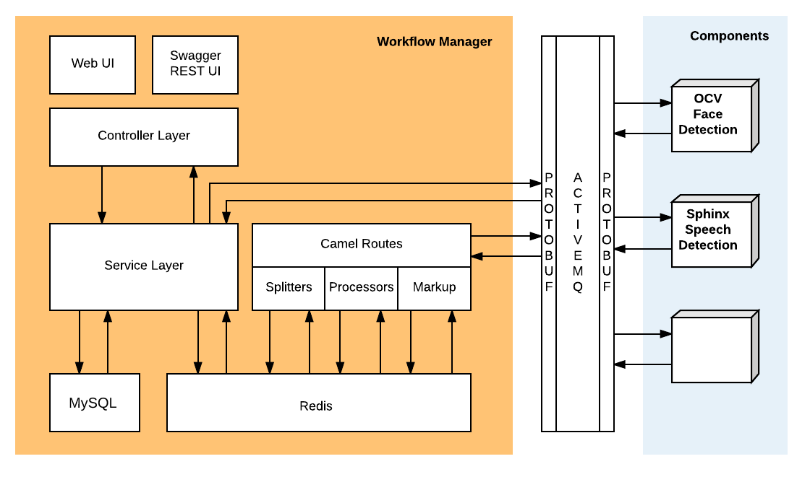

NOTICE: This software (or technical data) was produced for the U.S. Government under contract, and is subject to the Rights in Data-General Clause 52.227-14, Alt. IV (DEC 2007). Copyright 2022 The MITRE Corporation. All Rights Reserved.
INFO: This document describes the Workflow Manager architecture for C++ and Java batch processing. The Python batch processing architecture and C++ stream processing architecture use many of the same elements and concepts.
Workflow Manager Overview
OpenMPF consists of three major pieces:
- A collection of Components which process media
- A Node Manager, which launches and monitors running components in the system in a non-Docker deployment
- The Workflow Manager (WFM), which allows for the creation of jobs and manages the flow through active components
These pieces are supported by a number of modules which provide shared functionality, as shown in the dependency diagram below:

There are three general functional areas in the WFM:
- The Controllers are the primary entry point, accepting REST requests which trigger actions by the WFM
- The WFM Services, which handle administrative tasks such as pipeline creation, node management, and log retrieval
- Job Management, which uses Camel routes to pass a job through the levels of processing
There are two different databases used by the WFM:
- A SQL database stores persistent data about jobs. This data includes:
- The job ID
- The start and stop time of the job
- The exit status of the job
- Job priority
- Job input/outputs
- A Redis database for storing track and detection data generated by components as they process parts of the job in various stages of the pipeline.
The diagram below shows the functional areas of the WFM, the databases used by the WFM, and communication with components:

Controllers / Services
The controllers are all located here.
Every controller provides a collection of REST endpoints which allow access either to a WFM service or to the job management flow. Only the JobController enters the job management flow.
Basic Controllers
The table below lists the controllers:
| Controller Class | Description |
|---|---|
| AdminComponentRegistrationController | Handles component registration |
| AdminLogsController | Accesses the log content via REST |
| AdminPropertySettingsController | Allows access and modification of system properties |
| AdminStatisticsController | Generates job statistics |
| AtmosphereController | Uses Atmosphere to manage server-side push |
| BootoutController | Handles bootouts when a second session is opened by the same user |
| HomeController | Manages index page and version information |
| JobController | Manages job creation and interaction |
| LoginController | Manages login/logout and authentication |
| MarkupController | Handles retrieving markup results |
| MediaController | Handles uploading and downloading media files |
| NodeController | Manages component services across nodes in a non-Docker deployment |
| PipelineController | Handles the creation and deletion of actions, tasks, and pipelines |
| ServerMediaController | Enables selection and deselection of files at a directory level |
| SystemMessageController | Manages system level messages, such as notifying users that a server restart is needed |
| TimeoutController | Manages session timeouts |
The following sections describe some of the controllers in more detail.
AdminComponentRegistrationController
In a non-Docker deployment, components can be uploaded as tar.gz packages containing all necessary component data. For more information on components, read OpenMPF Component API Overview.
The AdminComponentRegistrationController provides endpoints which allow:
- Access to current component information
- Upload of new components
- Registration and unregistration of components (note that components must be registered to be included in pipelines)
- Deletion of components
JobController
A job is a specific pipeline's tasks and actions applied to a set of media. The JobController allows:
- Access to information about jobs in the system
- Creation of new jobs
- Cancellation of existing jobs
- Download of job output data
- Resubmission of jobs (regardless of initial job status)
MarkupController
Markup files are copies of the initial media input to a job with detections visually highlighted in the image or video frames. The MarkupController can provide lists of available Markup files, or it can download a specific file.
MediaController
The MediaController enables upload and organization of media files within the WFM. It provides endpoints for media upload, and also for creation of folders to organize media files in the system. At this time, there are no endpoints which allow for deletion or reorganization of media files, since all media is shared by all users.
NodeController
OpenMPF uses multiple hosts to enable scalability and parallel processing. The NodeController provides access to host information and allows components to be deployed on nodes in a non-Docker deployment. One or more components can be installed on a node. The same component can be installed on multiple nodes. Each node can manage one or more services for each component.
The NodeController provides host information and component service deployment status. It also provides an endpoint to deploy a service on a node and an endpoint to stop a service.
For more information on nodes, please read the Node Configuration and Status section in the Development Environment Guide.
PipelineController
The Pipeline Controller allows for the creation, retrieval, and deletion of pipelines or any of their constituent parts. While actions, tasks, and pipelines may not be directly modified, they may be deleted and recreated.
For more information on pipelines, please read the Create Custom Pipelines section in the User Guide.
Job Management
The request to create a job begins at the JobController. From there, it is transformed and passed through multiple flows on its way to the component services. These services process the job then return information to the WFM for JSON output generation.
The diagram below shows the sequence of WFM operations for a job executing a single-stage pipeline.

After the job request is validated and saved to the SQL database, it passes through multiple Apache Camel routes, each of which checks that the job is still valid (with no fatal errors or cancellations), and then invokes a series of transformations and processors specific to the route.
Apache Camel is an open-source framework that allows developers to build rule-based routing engines. Within OpenMPF, we use a Java DSL to define the routes. Every route functions independently, and communication between the routes is URI-based. OpenMPF uses ActiveMQ to handle its message traffic.
Media Retriever Route
The Media Retriever Route ensures that the media for the job can all be found and accessed. It stores the media information on the server to ensure continued access.
Media Inspection Route
The Media Inspection Route splits a single job with multiple media inputs into separate messages, one for each piece of media. For each piece of media, it collects metadata about the media, including MIME type, duration, frame rate, and orientation data.
Job Router Route
By the time the Job Router Route route is invoked, the job has been persisted in the permanent SQL database.
This route uses the pipeline's flow to create the messages that are sent to the components. For large media files, it splits the job into smaller sub-jobs by logically breaking the media up into segments. Each segment has a start point and an end point (specified as a frame or time offset).
This route compiles properties for the job, media, and algorithm, and determines the next component that needs to be invoked. It then marshals the job into a serialized protobuf format and sends the message off to the component for processing.
This route may be invoked multiple times as future routes redirect back to the Job Router so that the job can be processed by the next component in the pipeline.
Once the job is completed, this route converts the aggregated track and detection data in Redis into a JSON output format. It then clears out all data in Redis for the job, updates the final job status in the SQL database, optionally uploads the JSON output object to an object storage server, and optionally makes a callback to the endpoint listed in the job request.
Detection Response Route
The Detection Response Route is the re-entry point to the WFM. It unmarshals the protobuf responses from components and converts them into the Track and Detection objects used within the WFM. It then optionally performs each of the following actions: track merging, detection padding, detecting moving objects, and artifact extraction. It stores the track and detection data in the Redis database and optionally uploads artifacts to an object storage server.
Task Response Aggregation Route (Not Shown)
The Task Response Aggregation Route is one of the exit points for the Detection Response Route. It waits until all of the sub-job responses have been retrieved for the current stage (task) of the pipeline, then it invokes the Job Router Route to see if any additional processing needs to be done.
Markup Response Route (Not Shown)
Markup files are copies of the initial media with any detections visually highlighted in the frame. The Markup Response Route optionally uploads the markup files generated by the Markup component to an object storage server and persists the locations of these markup files in the SQL database.
Other Routes (Not Shown)
Additionally, there is a Detection Cancellation Route for cancelling detection requests sent to components, and a Markup Cancellation Route for cancelling requests sent to the Markup component.
Also, there is a DLQ Route for handling messages that appear in the ActiveMQ Dead Letter Queue (DLQ), which usually indicates a component failure or inability to deliver a message. In these cases, the job is terminated with an error condition.